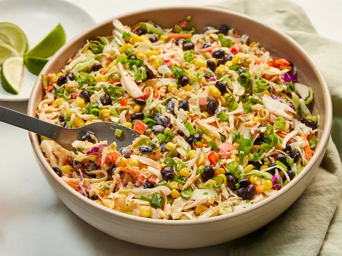

back
Cowboy Coleslaw

Description
Much like its cousin, Cowboy Caviar, this southwestern-style slaw combines crisp corn, bright peppers, and hearty black beans for a colorful, crave-worthy summer side. It’s creamy, spicy, and tangy, and it’s ready for the potluck in just 15 minutes. “Easy summer side salad to bring together in a hurry,” said recipe developer Amanda Stanfield.
Ingredients
- 1 (16-ounce) package shredded coleslaw mix
- 1 (15-ounce) can black beans, drained and rinsed
- 1 1/2 cups frozen corn, thawed and drained, divided (from 1[10-ounce] bag)
- 1 cup finely chopped red bell pepper
- 1/2 cup fresh cilantro, finely chopped
- 1/4 cup seeded and finely chopped jalapeño chile
- 1/2 cup mayonnaise
- 1/2 cup sour cream
- 1/4 cup fresh lime juice
- 1 tablespoon taco seasoning mix
- 2 teaspoons kosher salt
- 1 teaspoon ground cumin
- 1/4 cup thinly sliced scallions lime wedges, for serving
Steps
- Gather all ingredients.
- In a large bowl, toss coleslaw mix, black beans, corn, red bell pepper, cilantro, and jalapeño until well combined.
- Whisk together mayonnaise, sour cream, lime juice, adobo sauce, taco seasoning mix, salt, and cumin until smooth and evenly combined.
- Pour dressing over prepared coleslaw mixture. Toss until well combined.
- Garnish with scallions and serve with lime wedges. Serve immediately or cover and refrigerate for up to 12 hours.